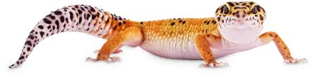
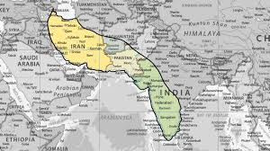
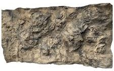
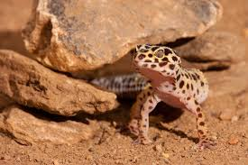
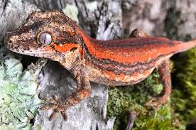
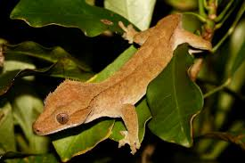
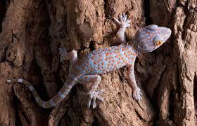
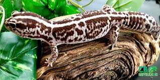

|  |
|
Here is an image of where lepoard gecko's reside  |
|
Example of a reptile rocky enclosure background  |
|
Image of a leopard gecko in its natural habitat  |
This lizard CAN drop its tail
Leopard geckos are arid lizard native to most iran, pakistan, afghanistan, and parts of india. Usually the places they live are either rocky deserts, dry grasslands, or a mix of the two.
Leopard geckos are insectivores, this means they only eat insects.
A small list of insects they enjoy include:
make sure to gut-load, and also dust their food with calcium and vitamin D3 supplements to prevent deficiencies.
Leopard geckos can regrow their tails
Leopard geckos have moveable eyelids
Leopard geckos, unlike alot of geckos use claws instead of sticky feet pads to climb
for more information on this lizard; go and visit the wikipedia here
if you're seriously considering a leopard gecko; watch this care guide.
| gecko pictures | common name | scientific name | average size |
|---|---|---|---|
|  | Gargoyle gecko | Rhacodactylus auriculatus | 6-8 inches |
|  | Crested gecko | Correlophus ciliatus | 7-10 inches |
|  | Tokay gecko | Gekko gecko | 10-12 inches |
|  | African fat tail gecko | Hemitheconyx caudicinctus | 7-9 inches |